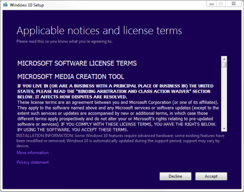
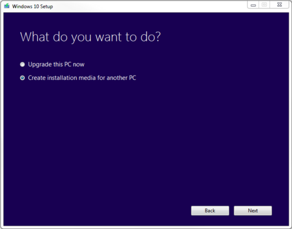
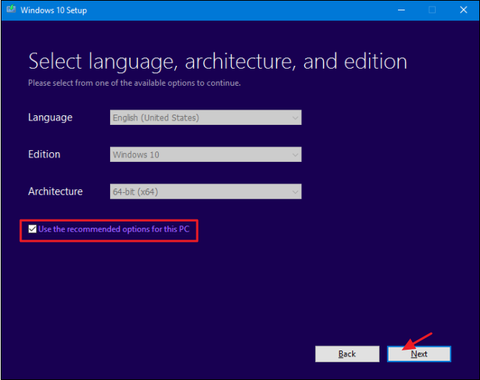
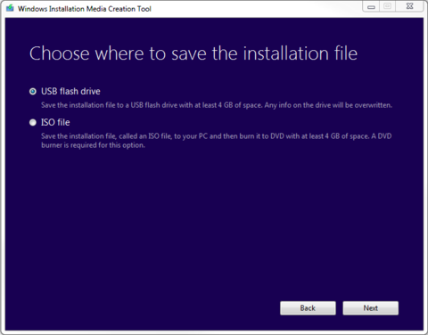
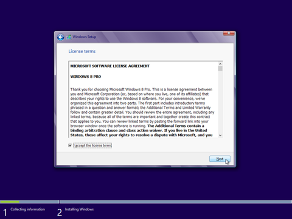
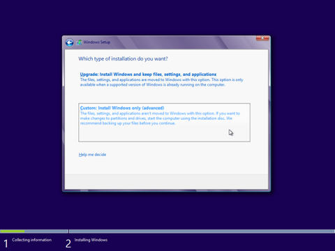
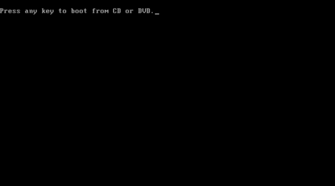
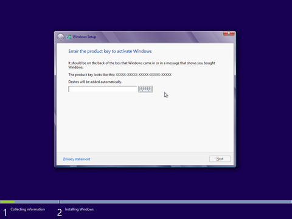
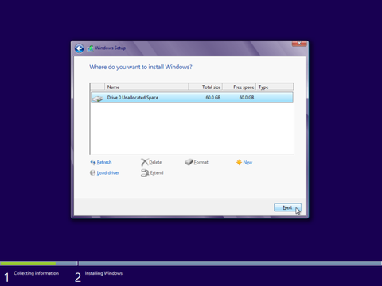

We've got the steps you need to know to get and install Windows 10 installed on your computer. Whether you're putting it on a computer for the first time, upgrading an earlier version of Windows, or just want to perform a clean installation on a computer that already has Windows 10 on it – we have answers.
I. Windows Installation Boot Media
- 1. Open up the Media Creation Tool you just downloaded and click run.
- 2. Click Accept the license terms. 
- 3. Select 'Create installation media for another PC' and click next. 
- 4. Either 'Use the recommended options for this PC' OR Select your Language, Edition: 'Windows ?X?', and either 32 or 64-bit(, if you are unsure try 64-bit,) and click next. 
- 5. Select 'ISO' File OR 'USB' Flash Drive. If you selected ISO: Wait for the file to download and insert a disc when the application asks. If you selected USB: Wait for the file to download and have the USB inserted in the computer. (Warning! This will destroy/wipe all data existing on the USB device!) 
II. Change BIOS to Boot from USB / CD/DVD [boot media]
USB/CD/DVD BIOS Boot Order (To enforce boot from preferred media)
You may need to change your system BIOS to start from the boot media [you created].
- 1. Start your computer to Enter your computer's BIOS. (When the BIOS screen appears or you are prompted to do so, press Del, Esc, F2, F10, or F9 (depending on your computer’s motherboard) to enter the system BIOS. The key to enter the BIOS is usually shown on the screen.)
- 2. Find your BIOS's Boot Options menu.
- 3. Save the changes of the settings.
- 4. Shut off your computer.
- 5. Insert the CD/DVD / USB boot media.
- 6. Start your computer to boot from the CD/DVD/USB.
III. Windows 10 Installation via Bootable Media
- 1. Insert the USB or CD/DVD Windows Installation Setup boot media.
- 2. Power on the computer to start the Windows Installation Setup process.
- 3. Watch for a message about pressing a key to boot from the device. Press a key to force the computer to start from the Windows Installation Setup boot media.
- 4. Once Windows Setup loads, you should be presented with a Windows Setup window... Choose your Windows Setup options / Select your Regional Settings
- 5. Click the 'Install' Now button.
- 6. Enter Your Windows Product Key, then click Next.
- 7. Accept the License Terms. Read over the Microsoft Software License Terms, check 'I accept the license terms', and click Next. 
- 8. Select the Custom installation. 
- 9. Decide which hard drive and partition you want to install Windows on
- 10. Install Windows on your preferred hard drive / partition. Select the preferred hard drive/partition and click Next. Windows should begin installing.
- 11. After installation has completed, remove the Windows Install Media and click Finish/Restart.
(When the computer starts, press a key, if you are asked if you would like to start from the Windows Installation Setup boot media by pressing any key.)


(Traditionally, your Windows product key can be found on your online order info, in the confirmation email for your purchase, or on the DVD packaging.)
OR
Delete All Partitions, so Windows Install will take over install the Windows OS onto the hard drive you select. Warning!!! Deleting partitions will delete/destroy all data(software, applications and files!) on the partitions that you delete ...which may result in destroying valuable data! ! !R
(When you restart your computer, it should run your new Windows Operating System!)